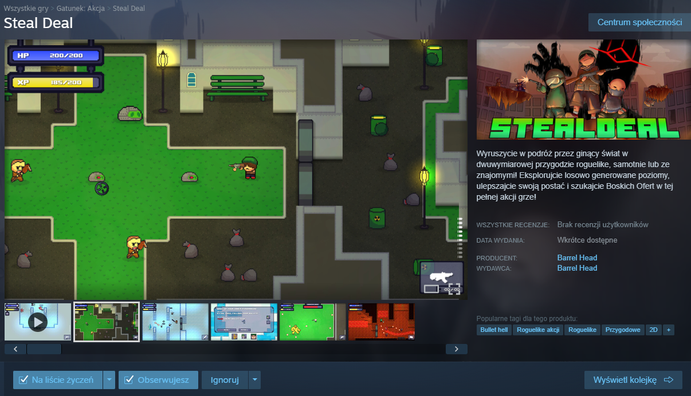

Trochę o tym, w jakich tytułach spędzam wolny czas
Autor: Mateusz Wajs
Moje podejście do gier jest dość zróżnicowane. W sferze tytułów dla jednego gracza moją absolutnie ulubioną produkcją jest Hollow Knight, choć przyznaję, że poziom trudności w Silksong potrafi mocno dać mi w kość. Z kolei do Wiedźmina 3 wciąż regularnie powracam – z wieczną, żywą nadzieją, że pewnego dnia wreszcie uda mi się go ukończyć.
Nie stronię jednak od rozgrywki wieloosobowej. Z przyjemnością spędzam czas ze znajomymi, wchodząc do świata Minecrafta. Tak zwany "friendslop" też nie jest mi obcy, bo takie tytuły jak R.E.P.O. czy Lethal Company również są regularnie w mojej rotacji gier.
Czasami przyjemnie wrócić do tytułów esportowych, które jednak traktuje bardziej casualowo. Moim niezmiennym faworytem pozostaje Overwatch.
Oczywiście nie mogę się doczekać premiery gry Steal Deal, którą bardzo zachęcam sprawdzić: https://store.stealdealgame.com/.
